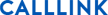

아직 백링크를 모르신다면
우리의 스타트 패키지로 시작하세요.
상위 노출을 위해선 초기 단계 작업이 매우 중요합니다.
스타트 패키지를 사용하여 구글, N사 순위 100위 이내로
잡으세요.
백링크 구축을 위한 최소한의 SEO 셋업 패키지로,
사이트 광고를 위한 키워드 기초 작업입니다.
- · 사이트 개설 1개월 미만 (신규 런칭)
- · 순위 진입 전 내부 최적화 및 콘텐츠 작업 셋팅
- · 높은 주제 관련성
- · 고유 콘텐츠로 개별 작업
- · 최소 키워드 테스트
- 백링크 1,000개
- SEO 작업 지수 30% 이하
- 작업기간 2일 이내
시작하세요.
우리와 함께 업계 1위를
가장 높은 ROI 툴과 지속 가능한 증명 된 효과로
업계 1위, Market Share 전략을 실행할 수 있습니다.

가장 높은 ROI,
가장 빠른 효과
일반적인 마케팅은 고객을 돈으로 사오는 행동을 지속적으로 해야
하지만 백링크는 약 2주면 상위권
선점이 가능하며,
매우 오랜 기간 상위 노출 순위를 유지하여
가장 높은 ROI(광고비 대비 순익)를
직접 체험하실 수 있습니다.
한 달간의 백링크 ROI 곡선
우리의 백링크는
안전하고 빠릅니다.
고품질 백링크 하나가 저품질 백링크 1,000개보다
높은 점수로 측정 됩니다.
우리의 성과가 빠르게 나타난다는건
백링크의 품질이 그만큼 좋다는 것을 증명합니다.
키워드/수량별 상위 도달 예상 그래프
하나를 달더라도
확실한 콜링크.
저렴한 가격으로 판매되는 업체들의 매크로 시스템을 통한
무작위 백링크 생성은 저품질
사이트로 측정되어
순위권 이탈로 이어집니다.
매크로 시스템으로
무작위 저품질 백링크 생성
주제와 가장 연관성 있는
고품질 백링크 생성
타사이트에
무작위 댓글로 백링크 생성
최소 준최적화 이상의
도메인 지수에 백링크 생성
스팸성 사이트에
백링크 생성
Do-follow 링크주스를
전달하는 링크를 사용하여
높은 점수 획득
짧은 작업 기간과
작업 진행 과정 확인 불가
체계적인 작업 기간으로
데이터 리포트를 통해
진행 과정 제공
우리의 훌륭한 기술력
지속 가능한 효과
콜링크의 SEO 기반으로 갖춘 훌륭한 기술력은 경쟁사에서
약 2배 이상의 많은 백링크를 써야 그나마 따라올 수 있을
것입니다.
좋은 사이트를 위한 30일
빠른 시간 내 관련 이슈 없이 많은 백링크를 생성하는 것은
순위권을 이탈하는 저품질 사이트의 원인이
됩니다.
콜링크는 백링크 생성을 위한 기회 시간과
플랫폼을 매칭하는 좋은 작업
시간을 알고있습니다.
성공적인 결과를 위한 커뮤니케이션
24시간 일하는 콜링크는 어떻게 작업이 진행되고 있는지
확실한 데이터 리포트를 제공 합니다.
결국, 좋은 작업 시간은 좋은 결과로 이어집니다.
좋은 사이트를 위한 30일
우리는 무분별한 마케팅을 권장하지 않습니다.
콜링크는 플랫폼, 상품 등의 특성상 가장 잘 맞는
마케팅 채널과 툴을
알고있습니다. 처음 접하는 분야라면 백링크의 효과가 있을 지
콜링크와 충분히 상담 해
보세요.